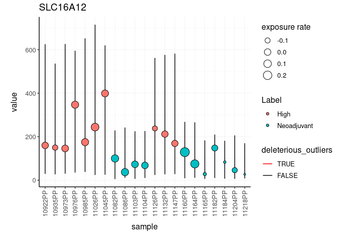
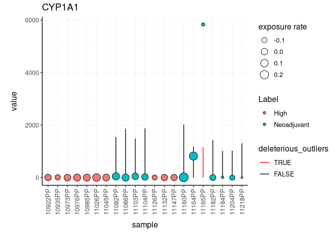

The input data set is a tidy representation of a differential gene transcript abundance analysis
To install:
Before install, for linux systems, in order to exploit multi-threading, from R write:
fileConn<-file("~/.R/Makevars")
writeLines(c( "CXX14FLAGS += -O3","CXX14FLAGS += -DSTAN_THREADS", "CXX14FLAGS += -pthread"), fileConn)
close(fileConn)Then, install with
devtools::install_github("stemangiola/ppcseq")You can get the test dataset with
ppcseq::counts ## # A tibble: 394,821 x 9
## sample symbol logCPM LR PValue FDR value W Label
## <chr> <chr> <dbl> <dbl> <dbl> <dbl> <int> <dbl> <chr>
## 1 10922PP SLC16A12 1.39 41.1 1.46e-10 0.00000274 160 -0.129 High
## 2 10935PP SLC16A12 1.39 41.1 1.46e-10 0.00000274 150 -0.127 High
## 3 10973PP SLC16A12 1.39 41.1 1.46e-10 0.00000274 146 -0.426 High
## 4 10976PP SLC16A12 1.39 41.1 1.46e-10 0.00000274 347 -0.0164 High
## 5 10985PP SLC16A12 1.39 41.1 1.46e-10 0.00000274 175 -0.135 High
## 6 11026PP SLC16A12 1.39 41.1 1.46e-10 0.00000274 244 0.125 High
## 7 11045PP SLC16A12 1.39 41.1 1.46e-10 0.00000274 399 -0.0892 High
## 8 11082PP SLC16A12 1.39 41.1 1.46e-10 0.00000274 100 0.261 Neoadjuvant
## 9 11086PP SLC16A12 1.39 41.1 1.46e-10 0.00000274 37 -0.132 Neoadjuvant
## 10 11103PP SLC16A12 1.39 41.1 1.46e-10 0.00000274 73 0.146 Neoadjuvant
## # … with 394,811 more rowsYou can identify anrtefactual calls from your differential transcribt anundance analysis, due to outliers.
# Import libraries
counts.ppc =
ppcseq::counts %>%
mutate(is_significant = FDR < 0.01) %>%
identify_outliers(
formula = ~ Label,
.sample = sample,
.transcript = symbol,
.abundance = value,
.significance = PValue,
.do_check = is_significant,
percent_false_positive_genes = 5
)The new posterior predictive check has been added to the original data frame
counts.ppc ## # A tibble: 15 x 4
## symbol `sample wise data` `ppc samples failed` `tot deleterious outliers`
## <chr> <list> <int> <int>
## 1 SLC16A12 <tibble [21 × 14]> 0 0
## 2 CYP1A1 <tibble [21 × 14]> 1 1
## 3 ART3 <tibble [21 × 14]> 0 0
## 4 DIO2 <tibble [21 × 14]> 0 0
## 5 OR51E2 <tibble [21 × 14]> 0 0
## 6 MUC16 <tibble [21 × 14]> 0 0
## 7 CCNA1 <tibble [21 × 14]> 0 0
## 8 LYZ <tibble [21 × 14]> 1 1
## 9 PPM1H <tibble [21 × 14]> 0 0
## 10 SUSD5 <tibble [21 × 14]> 0 0
## 11 TPRG1 <tibble [21 × 14]> 0 0
## 12 EPB42 <tibble [21 × 14]> 0 0
## 13 LRRC38 <tibble [21 × 14]> 0 0
## 14 SUSD4 <tibble [21 × 14]> 0 0
## 15 MMP8 <tibble [21 × 14]> 0 0The new data frame contains plots for each gene
We can visualise the top five differentially transcribed genes
counts.ppc_plots =
counts.ppc %>%
plot_credible_intervals()
counts.ppc_plots %>%
pull(plot) %>%
.[1:2]## [[1]]
##
## [[2]]